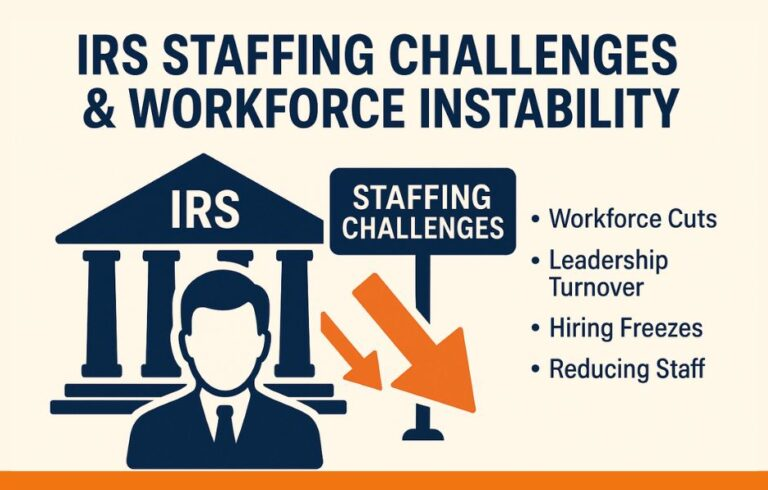

Insights & updates
Tax News
Straight answers on the tax changes that affect you — IRS updates, deadlines, deductions and relief strategies from the Priority Tax Relief team.


Tax Compliance & Strategy
What the 2025 Remittance Tax Could Mean for Investors & Small Business Owners
June 2025
Tax Relief
IRS Tax Deadlines Extended for Disaster-Affected States in 2025—Are You Eligible?
June 2025


No articles in this category yet. View all Tax News →
« Previous
Next »